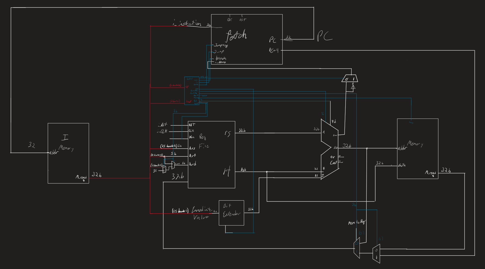
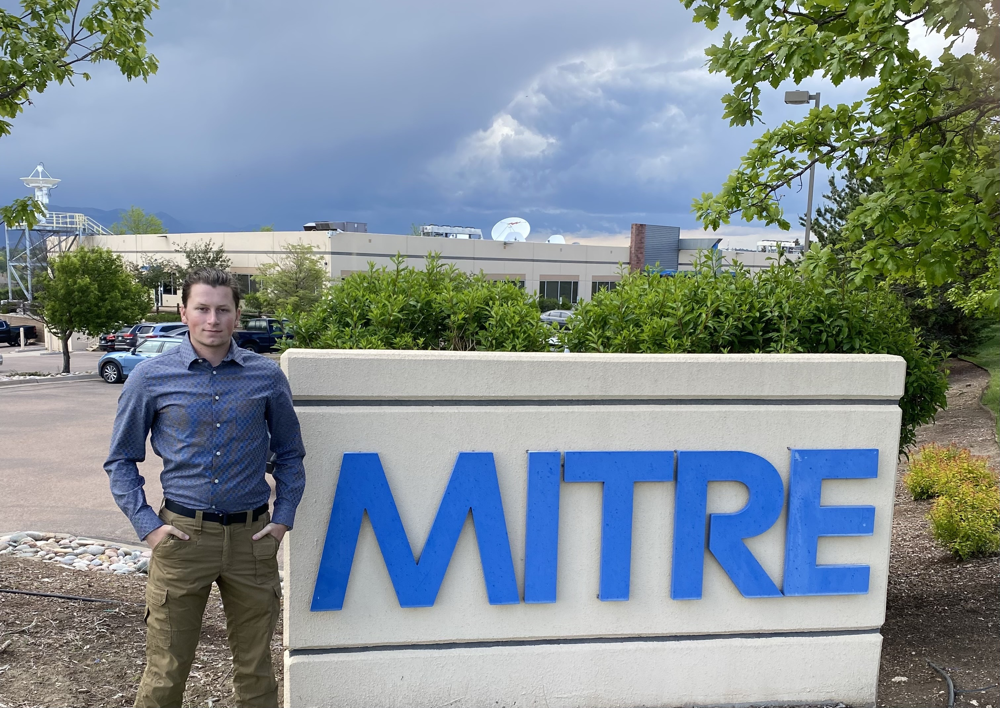
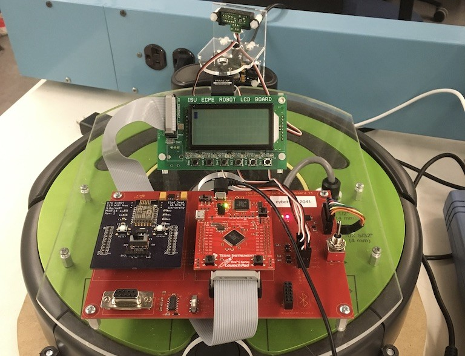

Each summary includes description, my role, skills gained, and supporting links per course requirements. :contentReference[oaicite:2]{index=2}
Senior Design: MySTEMGrowth
Description: MySTEMGrowth is a survey tool tailored for undergraduate research programs, helping coordinators measure student growth in skills, confidence, research identity, and career readiness across a term or summer experience. Program leads can deploy customizable pre/post surveys, gather mentor feedback, and track participation with ease; students respond on any device, and results roll up into real-time dashboards with exportable reports for grant reporting and continuous improvement. The platform emphasizes equity-minded analytics, clear visual summaries, and actionable insights, while supporting IRB-friendly consent language and data privacy best practices to keep participant information secure.
My Role: Frontend developer, Client Contact
Skills Gained: React, teamwork, spec-driven design, documentation.
Links:
Team Website ·
Project Git
Multicycle Processor
Description: For CPRE 381 I developed a multicycle processor in VHDL with dataforwarding, hazard detection, and parallelism. Used modlesim to sythesize the circuits and simulate the processor running with MIPS instructions.
Skills Gained: VHDL, MIPS, Hardware design

ACI – Antenna Control Interface
Description:Developed a web app to control satellite antennas for the MITRE corpoation. I developed a frontend website with html and JavaScript hosted on an internal server using apache. The web app backend was handled using Python-flask connected to a SQL database which connected to the antenna APIs to send movement commands and recieve data, I connected this to MITRE's network so I could communicate with antennas in other countries like Japan. I was able to fully develop and successfully impliment the ACI in 10 weeks.
My Role: Software Engineering Intern
Skills Gained: REST, Python, Python-flask, HTML, JavaScript, SQL databases, networks
Resources: Vendor APIs, internal docs.

Embedded System "lion fish hunting" Cybot
Description: For CPRE 288 i helped develop our “diver” autonomous vehicle in embedded C, created timers/interrupts to drive a 5-minute "hunting" routine, PWM to sweep a servo for area scans, input-capture for the PING ultrasonic sensor, ADC for IR distance, and UART/Wi-Fi to stream scan/bump/cliff telemetry to a base-station GUI while issuing commands through the iRobot Open Interface. I mapped behaviors like object detection/avoidance, boundary adherence, and destination docking into clear state logic, and added cues for “lionfish” hits. In our project demo the Cybot identified targets, navigated the field safely, and docked at the destination.
My Role: Control developer, Driver
Skills Gained: Embedded systems, C, sensors
